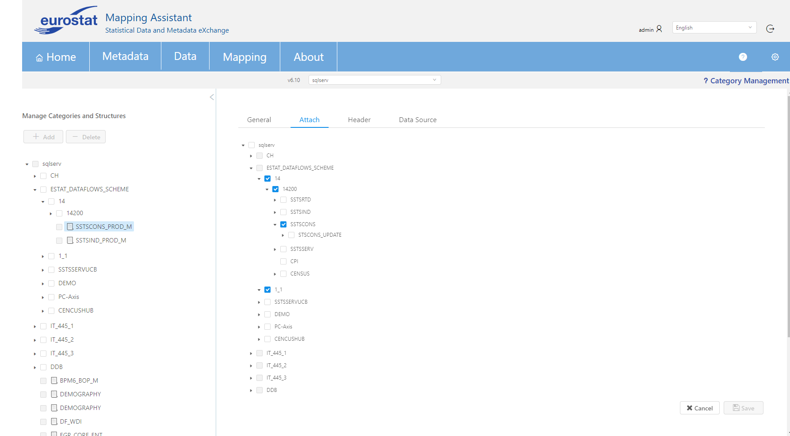
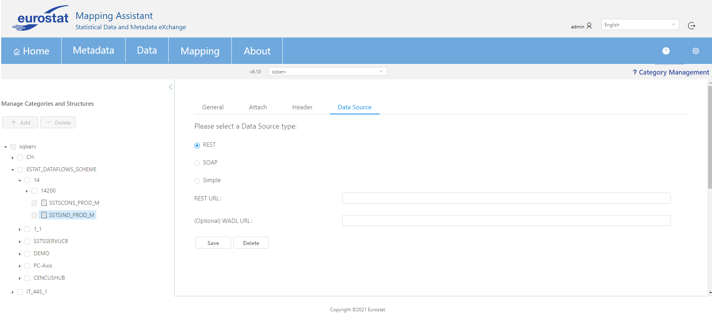

CATEGORY MANAGEMENT
This screen is used in order to manage Category Schemes and its child items. A tree diagram appears in the left section of this page as it can be seen in the below image that demonstrates all the Category Schemes and their children that exist in the database.
EDIT OF AN ITEM
The user can edit specific attributes of an artefact by selecting this relevant item. For example, in the below screenshot category scheme "ESTAT_DATAFLOWS_SCREEN" has been selected and only specific fields (Name, description etc.) can be updated.

INSERTION OF AN ITEM
In the top left side of the screen a button + Add is used in case the user wants to insert in the database a child item of the selected artefact. In case the root item is selected (in our example "sqlserv") then by clicking this button a category scheme can be inserted. If an artefact is selected, then only a child item can be inserted (for category schemes there is only the possibility to add a category, in contrast for categories the user can add another category or a dataflow).

As it can be seen in the example below, when the user selects to add a new child item (for example a Dataflow), then in this screen all relevant information of this item should be inserted in General tab. In contrast, when a user wants to edit an existing Dataflow all tabs are editable.
DELETION OF AN ITEM
Currently, only Category Schemes and Categories can be deleted using this page. To delete Dataflows, the user should navigate to Metadata -> Browse & Download (see BROWSE_AND_DOWNLOAD).
The user can select items using the checkboxes on the left side of the item names, and then Press the Delete button. A window will warn of potential changes, and if the user proceeds, the selected items will be deleted.
DATAFLOWS: Upgrade
A Dataflow can be upgraded provided that there is different Dataflow saved in the mapping store which has the same agency and id but a higher version. The user can check for available upgrades by clicking the "Check for Upgrade" button.
If there is an available upgrade, the button label will change to "Upgrade to version XYZ" where XYZ is the highest available version.
The user can click on the button again to choose a registry to upgrade from. Finally clicking on "Apply" will start the upgrade process.
Note that in order for an available to be successful the source dataflow (the lower version) needs to have a mapping set, while the target version (the high version) dataflow must not.
DATAFLOWS: Attach
By selecting a Dataflow from the left hand side, the user has the option to attach it to additional categories. By selecting the "Attach" tab, the category tree appears and the Categories this particular Dataflow belongs to are marked. From here, more categories can be checked or unchecked (to remove this Dataflow from the unchecked categories) and these actions can be finalized by pressing "Save".

DATAFLOWS: Header
By using the "Header" tab the user can add extra information about the selected Dataflow such as name, sender, receiver and contacts for each sender/receiver. As it is shown in the following image, initially when a Dataflow does not have a header, the sender and receivers contain some default pre-defined values to guide the user. The user can fill in the name, agency & source values as well as check the "Test" option if they wish.
Then, the sender details can be added by clicking on the pencil icon of the sender item, navigating to the following screen:
In this window the user can edit the sender ID and name(s), as well as add one or multiple contacts for this sender if they wish. Initially the contacts table is empty, and new contacts can be added by filling the form below the table. Some of the fields can accept multiple values separated by commas and the field border turns red when the value inside it is not valid. After the form is filled, the user can click on "Add Contact" to add the contact to the table. Any contact can be edited using the form when the user clicks on the table row to select it. Contacts can also be deleted from the table by selecting them using the checkbox and pressing "Delete".
Finally "Save" will save the current settings for the sender and navigate to the previous screen.
While we can only have one sender, we can add multiple receivers. The "New Receiver" button opens a screen to add a new receiver in the same was that we add a sender. Receivers can also be deleted from the table by selecting them using the checkbox and pressing "Delete". The "Save Header" button saves all of the header options while "Delete Header" deletes all saved information on this header.
DATAFLOWS: Data Source
A Data Source can be associated with a particular Dataflow by using the corresponding tab. There are 3 options to choose from (REST, SOAP, Simple) with slightly different configurations for each option. The "Save" button saves any changes made in this form while "Delete" completely erases any Data Source details for this Dataflow.
